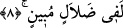
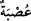

8. (Kardeşleri) demişlerdi ki: “Yûsuf ve kardeşi babamıza bizden daha sevgilidir.
Oysa biz bir cemaatiz. Babamız açık bir yanlışlık içindedir.”
Kardeşleri “demişlerdi ki: “Yûsuf ve kardeşi” yani ana-baba bir kardeşi olan
Bünyamin “babamıza bizden daha sevgilidir.” Âyetin başındaki ibtidâ lâmı cümlenin
ihtivâ ettiği bilginin gerçek olduğunu göstermek ve bu muhtevâyı pekiştirmek için
getirilmiştir. ‘Babamızın bu ikisine çok fazla sevgi beslediği kesindir, bu konuda hiç
şüphemiz yok.’ demektir.
Âyette, hem annenin hem de babanın en çok sevdiği kardeşin Yûsuf olduğuna işaret
etmek için Bünyâmin ismi zikredilmemiştir. Zâten bu yüzden Bünyâmin’e hiç
dokunmazlarken Yûsuf’u öldürmek ve uzaklaştırmak için plan yaptılar.
Âriflerden birisi şöyle der: “Yâkub Yûsuf’a on bir yıldız, güneş ve ayın kendisine
secde ettiği ile ilgili rüyâsında onun küllî istidâdının kemâli ortaya çıktığı için meyletti.
Yâkub bu rüyadan Yûsuf’un bütün kardeşlerinin istidâdlarını toplayarak hem babasının
hem de dedesinin mirâsına vâris olacağını anladı. Onu her zaman bağrına basmaya
başladı. Onu görememeye dayanamıyordu. Bu yüzden kardeşlerinin kıskançlığı had
safhaya vardı ve sonunda ona saldırmaya karar verdiler.”
Denilir ki: Allah Teâlâ Yâkub’u Yûsuf’a karşı duyduğu kalbindeki bu sevgi ile
imtihan etti. Bu imtihanı daha da şiddetlendirmek için Yûsuf’u ondan uzaklaştırdı.
Çünkü ilâhî sevgi çok kıskançtır. Çünkü sevgi sultanı kendi mülkünde ortak istemez.
Güzellik de kemâl de Allah’a âiddir. Bu yüzden kimse O’nun dışındakilerle (mâsivâ)
perdelenmemelidir. Evlâd tuzağından daha güçlü bir tuzak yoktur. İşte Nuh’un durumu
ortada. Kâfirlere bedduâ ettiğinde Allah Teâlâ kâfirleri boğarken hiç kalbi yanmadı.
Ama boğulma sırası oğluna gelince sabredemeyerek: “Şüphesiz ki oğlum da benim
âilemdendir.” (Hûd, 11/45) diye bağırmaya başladı.
“Oysa biz bir cemaatiz.” Biz her işi çekip çevirmeye muktedir bir cemaat olarak
sevilmeye daha lâyıkız. İki zayıf küçüğün on tane güçlüye tercih edilmesinin ne mânâsı
var!
“
”, on yahut daha fazla sayıdaki erkekler topluluğu anlamına gelir. Bu topluluğa
‘usbe’ denilmesi birtakım olayların bunları birbirleriyle kaynaştırıp kenetlediği (asb)
içindir. Üç ilâ beş kişiye nefer, beş ilâ on kişiye de “raht” adı verilir.
Bunlar küçük ve az olmaları açısından son derece yetersiz oldukları, biz ise bunlardan
üstün olduğumuz halde onları bize tercih ederek “babamız açık bir yanlışlık
içindedir.” “Yanlışlık” diye tercüme edilen “dalâl”in asıl mânâsı, doğrudan sapmaktır.
Yani uygun olan adâlet yolundan sapmak ve her birimize hak ettiğini vermekten yüz
çevirmektir.
Böyle söylerken Yûsuf’un görüntüsüne bakıyorlar, mânâ ve mâhiyetini tam olarak
kavrayamayıp böyle konuşuyorlardı. Yûsuf’un hakîkat bakımından kendilerinden daha